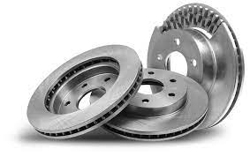

Timing Belt |
 Brake |
 Engine Oil |
|
| Basic necessities have been food, cloth and shelter right from the beginning of human race. However, if you live in the scorching heat of northern India, where the temperatures sometimes even touch the 50 degree Celsius mark during the summer season, you will agree that air conditioner (AC) is the lone saviour during such situations. As a matter of fact, Air Conditioner has been standardised as a basic feature in cars of all the ranges — be it a small entry-level car, be it a budget friendly sedan or be it a high-end SUV. So, in this piece, we will talk about the functioning of AC and the role that various components play in the smooth functioning of it.
Compressor The most important and significant part of the air conditioning system is the Compressor as the quality of cool air depends upon it. It carries out several key tasks in the functioning of an AC unit. The compressor is responsible for putting pressure on the refrigerant to generate cool air, while it also takes care of the temperature changes occurring inside and outside the car. In addition, it monitors and controls the temperature output of the Air Conditioner along with moving the air to the condenser. So, basically, the Compressor is the 'heart' of the AC and more or less, for the successful functioning of an AC, it must be dealt with utmost care and caution. Condenser Generally, the AC in any passenger vehicle is positioned in front of the radiator – earning the nickname of 'mini radiator'. The condenser happens to be yet another most crucial element in the functioning of an Air Conditioner after the Compressor. As we told above, when the compressor pressurises the refrigerant to develop cool air, the condenser carries out the task of lowering down the temperature and pressure of hot gases that are produced from the refrigerant. Additionally, it is the Condenser that moves the cooled liquid refrigerant to the accumulator, which we sometimes also call as receiver/dryer. Tube Tube, also termed as Orifice tube, can be found in cars with an accumulator as the vehicles with thermal expansion valve are equipped with a receiver/dryer. The tube is placed between the condenser and evaporator. It is tasked with monitoring the amount of pressure and temperature of the Air Conditioning system of the car. Tube also calculates the precise amount of refrigerant which can be moved to the evaporator without any hassles. Evaporator Evaporator plays a substantial role in the generation of cold air from the Air Conditioner. Being placed behind the dashboard in a car, it is responsible for making the air cool with the refrigerant before it comes out of the vents and enters the cabin of your car. Air Filter Colder and Cleaner air is liked by one and all from the Air Conditioner, be it home or the car. The air filter plays a big role in the quality of air that you receive from the air conditioner. The air filter in the cabin prevents dust, dirt, pollen, bacteria and exhaust gases from entering the AC system of your car. It also stops various other harmful stuff such as bugs, leaves and other debris from clogging up the system. It is recommended that the cabin air filter should be replaced every year as it gets clogged with debris and dirt, which will subsequently affect the functioning of your AC and compromise the air quality. |
|||